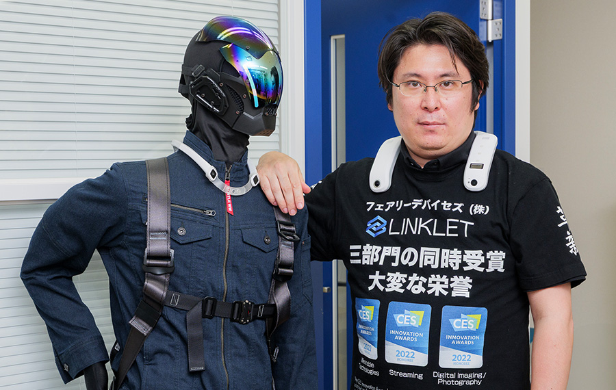
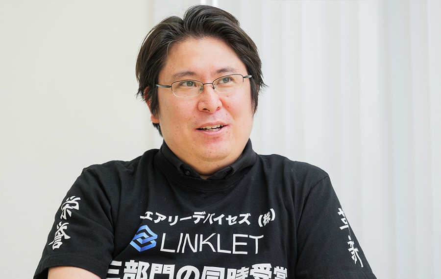
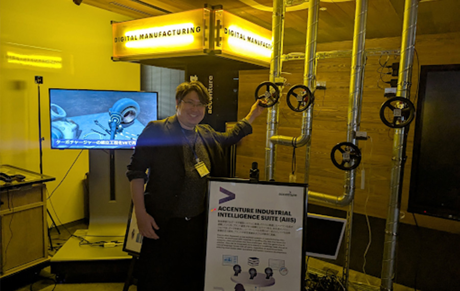
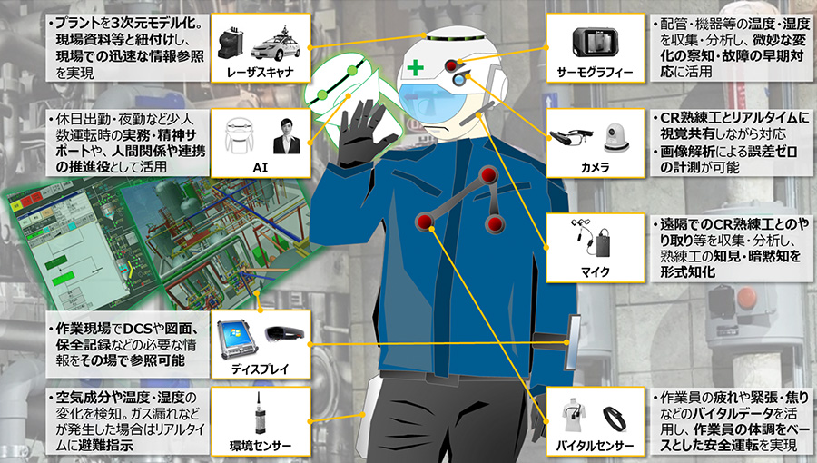
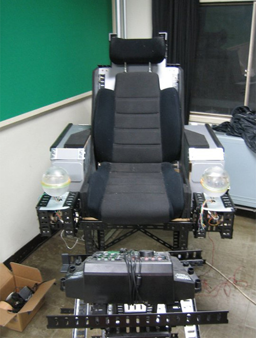
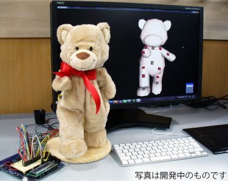
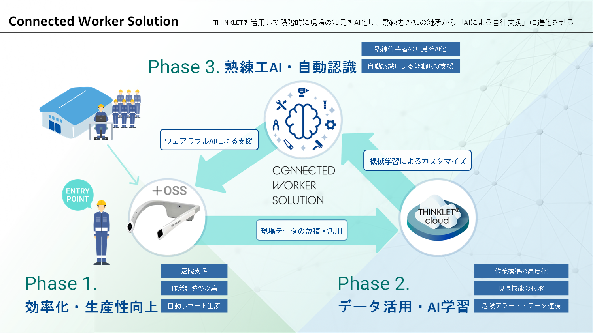
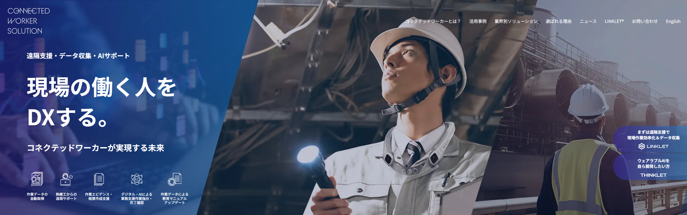
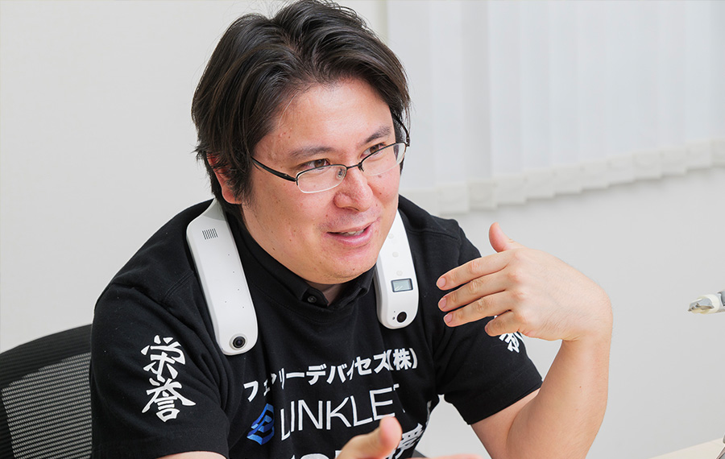
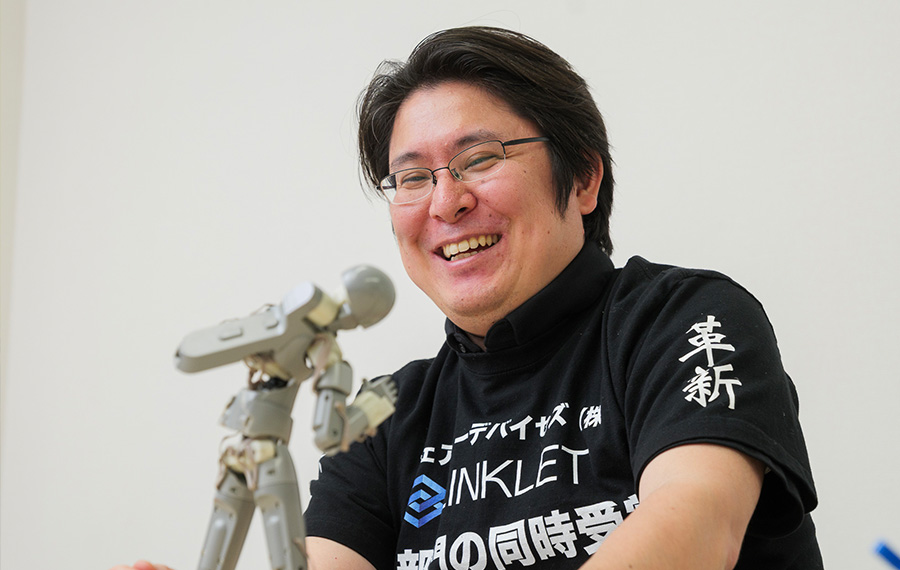

価値のギャップこそ未来
－ブルーカラー産業のデジタル化で見据える世界－

久池井 淳
フューチャリスト ／ フェアリーデバイセズ株式会社 執行役員COO
東京工業大学にてMBA/MOTを取得後にアクセンチュア入社。日本支社唯一のフューチャリストとして戦略コンサルティング本部でデジタル戦略策定等に従事。フェアリーデバイセズ株式会社にCOOとしてジョイン以降も、各社のオープンイノベーション支援、未来戦略立案に携わり、政府委員や複数社の顧問を務める。一貫して、トラディショナル産業のデジタル高度化(DX)をライフワークとして活動。2007年度未踏ユース採択。未踏ユース時代の仲間とQumarionを開発し、経済産業省から｢Innovative Technologies｣を受賞。
https://scrapbox.io/mitou-meikan/%E4%B9%85%E6%B1%A0%E4%BA%95_%E6%B7%B3
── これまでのキャリアについて教えてください。
私は学生時代からこれまで一貫して、「価値のギャップがある領域に身を置くこと」を軸にキャリアを歩んできました。未踏には大学時代に採択されましたが、その時のテーマは「ブルーカラー産業のデジタル化」でした。職人技で成り立っており、テクノロジーの活用がなされていない業界に対してデジタルの力で圧倒的に価値を出そうという発想です。美容師の業務をデジタルで効率化する方法を未踏のテーマとしました。当時の技術では満足のいく成果を上げられたとまではいえませんが、コンセプトは間違っていなかったと思います。当時は「デジタルトランスフォーメーション（DX）」という言葉もまったくない頃です。考え方としてはまさにその先端にトライしていました。
── キャリアのスタートはアクセンチュアですね。

もともとはユビキタス分野の研究者を目指していましたが、大きな視点、長期の視点でキャリアを考えられるアクセンチュアを選びました。本当にさまざまなタイプの人がいて、学齢不問で実力者が上に上がっていき、失敗しても泳がせてくれるキャパシティがありました。私は素材・エネルギーグループを自ら志望しました。珍しがられましたが、化学プラントは市場としても大きい割に、デジタル化が遅れており属人性が色濃く残っている業界です。このギャップが将来の飯の種になると確信したのです。とはいえ入社直後から垂直に立ち上がったわけではありません。初めからすべてうまくいく器用なタイプではないのです。ただ、いつも「最後には必ず大きく勝つ」と思ってやってきました。勝つまでやるということですね。だからこそ、最初のキャリアで小さな会社を選ぶのは絶対にやめようと決めていました。小さな会社で失敗すると後がないと思ったからです。
途中で半導体会社を事業再生したり、無人店舗を創ったり、農機具を売り歩いたり、紆余曲折を経ましたが、アクセンチュアでは私の検討した化学プラントのデジタル化プランを推進することや、経済同友会を通じた提言に繋げることができ、グローバルのプレスリリースも打ちました。また初期の成果を元に麻布十番でイノベーションハブという研究施設を立ち上げることも出来ました。

アクセンチュアでは最終的に「フューチャリスト」という肩書と自由度を得て、高い評価とポジションを提示されるに至りました。その後、フェアリーデバイセズ株式会社にCOOとしてジョインし、音声認識やAIを活用したウェアラブルデバイスを通じて、ブルーカラー産業のデジタル化を推進しています。

── いつ頃、どういうきっかけでものづくりや技術に興味を持ったのですか。
きっかけははっきりと憶えています。1988年、私が5歳のとき、渋谷の映画館で見たガンダムの映画『逆襲のシャア』です。もともと車や機械を好きな子供でしたが、決定的にものづくりの世界に入っていったのは、この映画を見てからです。「これ」を作りたいと思いました。その後、100回くらい見ていますから、どの場面で何に興奮したかも鮮明に語れます。一番興奮したのは、カタパルトのような装置で作りかけのガンダムを宇宙空間に射出するシーンです。私はカタパルトやコクピットが好きで、モビルスーツ自体や武器など、他の子が好きになるようなものには興味を示しませんでした。この興味は一過性のものではなく、大学3年の時にはガンダムのコクピットで操縦するゲームを自分で作ったほどです。

── ガンダムに興味を持つ子供は多かったと思いますが、コックピットやカタパルトに注目する幼稚園児というのは珍しい気がします。
ガンダムでは宇宙空間での戦闘シーンで何かにつけてカタパルトが出てきます（笑）。エネルギーをほとんど使わずに大きなものを打ち出せるカタパルトの「効率の良さ」にしびれました。コックピットに興味を持ったのは、今も昔も「ユーザーインターフェースが好きだから」だと思います。どういう仕組みで操作されているのかに興味があったのです。学生時代には、タッチパネルに物を乗せるとコントローラーになるゲームも作りました。ぬいぐるみやフィギュアをコントローラーにしてゲームを動かせるものです。当時はiPadが出た頃で、タッチパネル操作がまだ珍しかった時代です。プロトタイプを⻄尾さん(02 年未踏 ユース)と⼀晩で作って、そのあと中⼭さん(06 年下期未踏ユース)、上⽥さん(06 年下期未踏ユース)も加 わって拡張し、ゲームメーカーのイベントでゲームが展⽰されるなど協業したりしました。
https://www.youtube.com/watch?v=4MsaI8kGbzE
https://www.youtube.com/watch?v=XpWsrUd4Bfo
他にも、登さん(03 年未踏ユース)、伊藤君(06 年上期未踏ユース)、栗川君(06 年上期未踏ユース)と共に「ストーリーは書けるが、絵は苦⼿だという⼈」が3Dモデルを使って表現ができるよう、ぬいぐるみやフィギュアを動かして3DCGを操作可能な技術を開発し、「QUMARION（クーマリオン）」という⼈型⼊⼒デバイスとして製品化したこともあります。今にして思うと、UIを重視する私の興味や性格がものづくりに反映されていたのかもしれません。

https://www.softether.jp/1-product/51-quma
── 久池井さんの一貫したテーマである、ブルーカラー産業や熟練工のデジタル化について具体的に教えてください。
この動画は2016年に化学プラントのデジタル化や熟練工の技能伝承をデジタルで進めるための提言として経済同友会のコンビナート分科会で参加し、各社と協働してつくったものです。
経済同友会動画：https://www.youtube.com/watch?v=fGBHslzwYbw
化学プラント運転員のマナブさんが、キャリアを進める中で、熟練工からデジタル技術で支援を受けたり、本人が対応した故障等情報をデジタルデータとして再利用される形で蓄積し、それが熟練工のノウハウとして継承されていくという内容です。今見ても、やりたいことのビジョンやイメージはほとんど変わっていません。
私は今、同じ未踏の修了⽣で⼀緒に会社を経営している藤野君(09年下期未踏本体)や関君(11年未踏)や、ダイキンで協業している⽐⼾君(02年未踏ユース)とこのテーマの社会実装を進めていますが、LLMとデバイスの発達によって、実際に収集された現場データを学習させた AI が中堅作業員程度の判断であれば正しく下すことが出来ることが分かっています。


https://cws.fairydevices.jp/
むしろ、AIやハードウェアの技術が追い付いてようやく実装できる段階になったともいえます。これは単に企業の効率を上げ、生産性を高めるだけの話ではありません。現場の効率を改善することで実質的な稼働時間が延び、作業者の価値、ひいては収入も増やすことができます。さらに仕事上で発生するコミュニケーションのデータを活用できれば、漫画や本を書くのと同じく、知をデジタル化して共有することもできます。現場の貴重な知や経験をベースに、価値や貢献に応じて高収入を得られる世界です。ブルーカラー産業にこそ、デジタル化で価値を認められ、新たな価値をも生み出せるギャップが残っていると信じています。
学⽣時代やコンサルタント時代に描き、提⾔した未来像は今、現実のものとなりつつあります。今私が取り組んでいることそのものです。
── フェアリーデバイセズでは、現在はどのような仕事をしていますか。
COOとしてビジネス全般を担っています。フェアリーデバイセズは、「産業現場のデジタル化」を推進するために、ウェアラブルデバイスからクラウド、AIを網羅し、現場向けのソリューションを提供している会社です。私が首にかけている「LINKLET」が主力製品です。

作業者がこのように軽量のデバイスを首にかけるだけで、一人称視点首掛け型カメラとしてこちらから映像も提供できますし、両手で作業をしながらWEB会議もできます。これまでの頭に付けるタイプのウェアラブルカメラだと視点のブレがあり、見る側に映像酔いが起こります。また、スマートグラスは作業者の視野を狭めてしまうという課題があります。LINKLETで製造業、建設業、物流、保守点検などの現場で作業効率の向上や遠隔コラボレーションを実現することができます。また、熟練者のノウハウをデジタルデータとして蓄積・共有することで、現場の属人化を解消することもできます。現場の効率を改善し、作業者の価値を高めることに加え、日本の産業界が直面する高齢化や労働力不足に対応し、熟練者の技術をAIに継承することで持続可能な労働環境を作り出せると考えています。
── 今後の世の中の変化を踏まえ、どんなことを考えていますか。
高齢社会と人口縮小という、大きな課題に関わることを考えています。世界的に見て、日本は楽園だと思いますが、それが瓦解しつつあります。どうやったらそうならないか。現場を中心として、日本に蓄積されている知識をAIに移転し、デジタル化して輸出する構造を実現したいと思っています。
日本は、「鉱物の博物館」と呼ばれることがあります。実は日本にはウランや石油、レアメタルなど、ありとあらゆる鉱物が存在します。これは世界的に見ても稀であり、それだけ多様な環境が日本国内にあるということです。ただしそれぞれの量は少ない。だから資源国にはなりえません。それでも、多様な環境があるということは、ありとあらゆるデータを生み出せるフィールドがあるということです。資源は消費されますが、データは無尽蔵に生まれ、蓄積できます。これは必ずしも鉱物に限りません。有益なデータを活用してビジネスや価値を創出し、人口が縮小しても経済を支える基盤を作りたい。日本を、知見と環境を強みとする小さな実験場として位置づけ、アウトプットを世界に提供し続けることで、日本を高いレベルで保つことができるのではないかと考えているのです。
もうひとつは、AIによる年金制度です。日本は高齢化と労働力不足に直面しており、熟練者の技術が失われるリスクがあります。デジタル化でそれを保存し、若い世代や遠隔地のワーカーに伝えたい。これもまさに価値のギャップです。熟練の人が知恵や技をAIに提供し、その質や量に応じて年金がフィードバックされる。これなら熟練者がノウハウを残す動機が生まれます。これまで価値を認められてこなかった領域にこそ、大きく変えられるポテンシャルがあると考えています。
── イメージする世界が実現したら、個人としては何をしていきたいですか。

何でも自分で作って暮らしたいですね。
たとえば料理も、ハンバーグを食べるなら外食ではなく自分で作りたい。献立も自分の好きなようにしたい。のりたまご飯、細いフライドポテト、キャベツ、コーンスープ、味噌汁、カニクリームコロッケにクリームチーズが欲しいし、飲み物は牛乳がいい。こだわりたいことがたくさんあるのに外食だと絶対にそうはならないので（笑）。
料理はすごいですよ。科学であり、ロジックです。スーパーで買ってきたマグロのサクに塩を振って洗うと適度に水分が抜けて、切るだけで料亭のような味になります。旨味はイノシン、グアニル、グルタミンをどう活かすかです。自分で作ればそれらをコントロールできて面白いです。科学的な原理原則を理解していれば、大きなギャップを作ることが出来ます。
私は昔からハードウェア、ソフトウェア問わず、ずっと手を動かして何かを作ってきました。技術が進んだ今、自由に使える時間がたくさんあればどんなものを作るでしょうかね。きっと作りたいものがいろいろと出てくると思います。これまでは、スキルを使ってお金を稼がないとならなかったので、AIがもっと普及して、自分のためだけに自分のスキルを好きに使える日が来るのを待ち望んでいます。
人間はAIや機械と共生し、手先が器用で、適度に賢い存在として価値をシフトすべきだと思っています。そんな世の中に向けて、これからも価値を最大化できるギャップを見出していきます。
企画・取材・編集 清水隆史